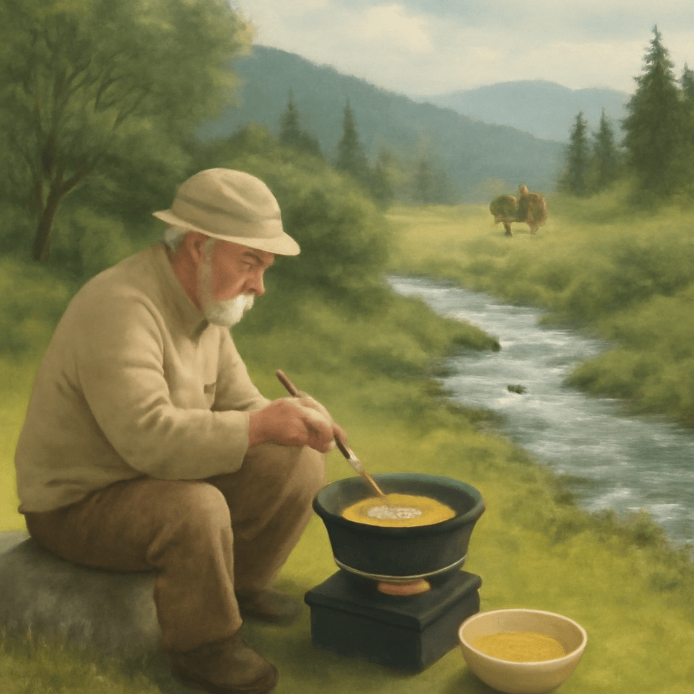

2025/09/04(木)
今日はガスコンロを初めて使ってみたんじゃ。火加減が思いのほか難しくて、焦げそうになりながらもなんとか無事に料理ができたんじゃよ。慎重に扱わねばならんと改めて感じたわい。そういえば、たまねぎたっぷりのオニオンスープも作ってみた。じっくり炒めたたまねぎの甘みが染み渡って、心がほっと温まる一杯じゃった。昼間は沢筋を散歩し、鳥のさえずりや小川の流れに癒されてな、自然の息吹に触れるのはホンマにありがたいことじゃと思ったわい。旅の思い出も蘇るな、パキスタンでの蜂蜜入りのお茶の味が今も忘れられん。身近な日常の中にも、こうした小さな幸せがいっぱいあるんじゃなと噛み締めつつ、今日もゆっくり過ごすとしようぞ。焦げつかぬように、火も心も大切にせねばのう。
